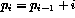

The numbers 1, 3, 6, 10, 15, 21, ... are called triangular numbers because the number of units in each can be displayed as a trianglar pyramid of blobs. The , is computed from  . Write an array valued EXTERNAL function which takes one argument (N) and returns a vector of the first N triangular numbers.
Make sure to provide an INTERFACE and specify the argument INTENT.
Write a test program to demonstrate the function and print out the sequence where N = 23.